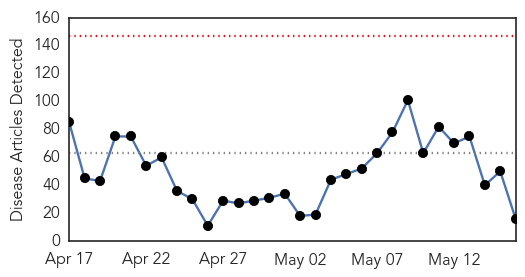

Ebola
30-Day Web Trend
0 alerts, 0 warnings

30-Day Twitter Trend
0 alerts, 0 warnings

Article Locations
Article Confidences

Top Articles:
- 1.000
- How we beat the Ebola epidemic
- 1.000
- Ebola outbreak reaches Senegal, riots break out in Guinea
- 1.000
- Ebola, Killing Scores in Guinea, Threatens Nearby Nations
- 1.000
- Ebola Outbreak Not Over For Guinea As Spike In New Cases Linked To Funeral Ceremonies
- 1.000
- Ebola Death Toll in Western Africa, Guinea, Reaches 78
- 0.998
- Ebola Virus Disease Emergency Appeals (Liberia, Sierra Leone, Guinea, Nigeria, Senegal and Africa Coordination & Preparedness): Combined Ebola Operations Update No°21 - Sierra Leone
- 0.996
- OraSure Ebola test one of many in the field in Africa
- 0.996
- Ebola Virus Disease Emergency Appeals (Liberia, Sierra Leone, Guinea, Nigeria, Senegal and Africa Coordination & Preparedness): Combined Ebola Operations Update No°20 - Sierra Leone
- 0.995
- Winnipeg Free Press
- 0.993
- News Analysis: Second Italian infected by Ebola virus illustrates rich-poor divide - Xinhua
- 0.980
- UPDATE: Ebola Test Results Are In
- 0.938
- Park confers medals on 24 Koreans over Ebola relief
- 0.910
- Nurses with tablets and bikers with smartphones join Ebola fight
- 0.845
- Good news (for a change)
- 0.820
- Former Topekan working as 'disease detective'
- 0.632
- PopeCrimes& Vatican Evils.FRANCIS=CON-Christ BenedictXVIRatzingerCrimesAgainstHumanityatTheHague: Le Moyne grads must protest in-campus to oust Cardinal Dolan & they must occupy Rector’s office like L
Top Tweets:
- 0.688
- WATCH: @UNMEER Chief Peter Graaff hails Liberia's declaration of being free of Ebola Virus transmission https://t.co/FtzsQJhibZ
- 0.527
- Health briefs: Ebola tied to changing eye color - Minneapolis Star Tribune http://t.co/XqRwdoJ4MG ebola EVD
- 0.502
- OraSure in race to make much-needed rapid Ebola test - Allentown Morning Call http://t.co/WXrnLBsBiG ebola EVD
Pertussis
30-Day Web Trend
1 alerts, 0 warnings

30-Day Twitter Trend
0 alerts, 0 warnings

Article Locations


Article Confidences

Top Articles:
Top Tweets:
-
No tweets found for May 16, 2015